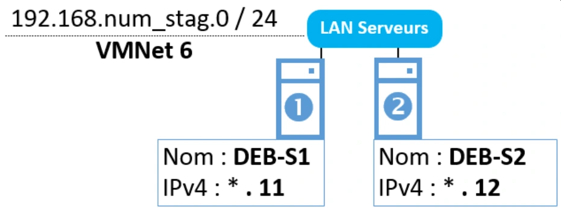

Transcription du document de formation dans l’ordre des pages.
Services réseau en environnement Linux
Avant de démarrer ce TP, il convient d’avoir suivi les vidéos des modules 1 à 2 et d’avoir réalisé les TP proposés.
Durée estimée
3 heures
Création de la machine virtuelle cliente :
| Nom de la VM | Système d’exploitation | RAM | Réseau |
|---|---|---|---|
| Cli-db-10 | Linux Debian 10.x 64 bits | 1024 MB | Custom / VMNet4 |
# nmcli connection modify Wired\ connection\ 1 ipv4.addresses
172.18.X.10/24 ipv4.method manualServices réseau en environnement Linux
+ Désactivation/Activation connexion via nmtui
ou configuration + activation interactive via nmtui
ou configuration via l’interface graphique
Pour cli-deb-10, nommage de la machine à l’installation
Ou # nmcli general hostname cli- deb-10Ou configuration interactive avec nmtui
Création des machines virtuelles serveur :
Créer les machines virtuelles suivantes
| Nom de la VM | Système d’exploitation | RAM | Réseau |
|---|---|---|---|
| DEB-S1 | Linux Debian 10.x 64 bits | 1024 MB | Custom / VMNet6 |
| DEB-S2 | Linux Debian 10.x 64 bits | 1024 MB | Custom / VMNet6 |

Services réseau en environnement Linux
Pour une configuration dynamique :
Sur deb-s1
# ip a add 192.168.X.11 dev ens33Sur deb-s2
# ip a add 192.168.X.12 dev ens33Pour flusher les interfaces :
# ip a flush dev ens33Pour une configuration définitive
Sur deb-s1
# vi /etc/network/interface
auto ens33
iface ens33 inet static
address 192.168.X.11
netmask 255.255.255.0Sur deb-s2
Même chose que pour deb-s1 avec IP 192.168.X.12
Ne pas oublier de redémarrer la configuration : # systemctl restart networking.service
Pour le hostname :
# vi /etc/hostname
deb-s1
# hostname –F /etc/hostname
# vi /etc/hosts
127.0.1.1 deb-s1Même chose avec deb-s2
Services réseau en environnement Linux
Créer une machine virtuelle avec les caractéristiques suivantes :
| Nom de la VM | Système d’exploitation | RAM | Réseau |
|---|---|---|---|
| RouTux | Linux Debian 10.x 64 bits | 1024 MB | Aucune carte réseau |
Même chose qu’à l’étape 2 sans configuration de réseau pour l’instant.